Lab 3 - Real-Time AI Assistant for Complex Patient Interactions
Section Agenda
| # | Task | Duration |
|---|---|---|
| 1 | AI Assistant Provisioning | 15 min |
| 2 | Assigning AI Assistant Skills to Queues | 10 min |
| 3 | Voice Flow Orchestration | 10 min |
| 4 | Live Patient Journey – English & Spanish Testing | 25 min |
Introduction
Welcome to our final core use case. You’ve mastered the voice and digital patient journeys; now, we tackle high-stakes clinical support. When a patient needs urgent coverage for a critical procedure, the human-AI partnership is vital. Let’s build the future of agent empowerment.
Key Learning
In high-stakes healthcare, AI is about augmentation. You will learn how to leverage context preservation (passing data from the AI Agent to the Human Agent) and the AI Assistant to drive down Average Handle Time (AHT), ensure clinical accuracy, and build lasting patient trust.
The PodID Discipline
Always replace XXX with your assigned 3-digit ID (e.g., 001, 002). Your naming convention must start with the prefix Pod followed by your PodID (PodXXX). If you do not follow this convention exactly, you will overwrite your neighbor's work. Stay disciplined with your naming convention!
Phase 1: AI Assistant Provisioning
Architectural Note: We are optimizing our architecture by utilizing a single, multilingual AI Assistant to serve both English and Spanish queues. This demonstrates the scalability of Webex Contact Center AI, as the assistant dynamically leverages language context passed from the voice flow.
In this phase, you will provision the "Brain" of the agent-assist experience. We will build the master AI Assistant and assign it to the respective Knowledge Base.
Prerequisite
Ensure you have downloaded the source document for the Knowledge Base.
Right-click the link below, select Open in New Tab, and save the file to your
Desktop folder as UseCase3_CumulusHospital_AIAssistant_KB.
1.1 Create the English Knowledge Base
-
Login to Collaboration Control Hub with your admin credentials.
-
Navigate to Collaboration Control Hub > Contact Center > Overview. Scroll down to the Quick Links section and open Webex AI Agents. You are now in the AI Agent Studio.
-
Navigate to the third tab on the left labeled Knowledge.
-
Click the black + Create Knowledge Base button in the upper-right corner and enter the following information:
Field Value Name PodXXX_UseCase3_AIAssistantCumulus (Replace XXX with your PodID) Description Pod XXX UseCase3 Cumulus AI Assistant KB EN Click Create.
-
In the Knowledge Base configuration page, click Add Source in the top-right corner, select Files, and click Add file.
-
Select the document from your desktop folder named:
UseCase3_CumulusHospital_AIAssistant_KB -
Click Process file.
-
Click Close and keep processing.
Syncing in Progress
The source will show as Processing for a couple of minutes. Once it is ready, the status will change to Updated.
If it is still syncing, continue to the next step — it will complete in the background.
See how to configure
{kind=link}
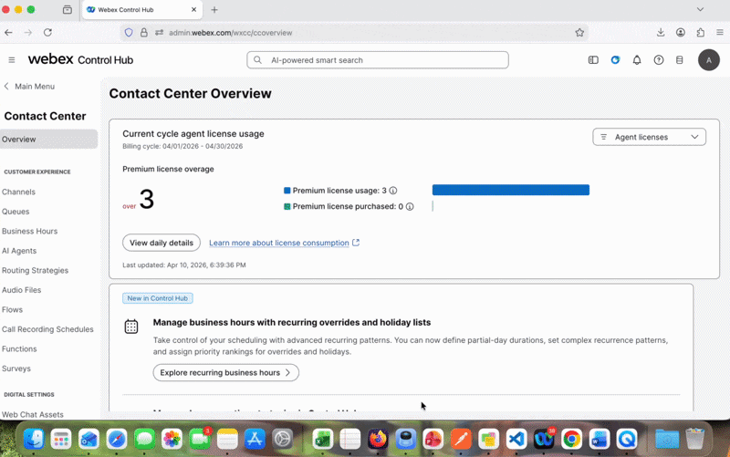
1.2 Create the AI Assistant
-
In the AI Agent Studio, navigate to the second tab on the left labeled AI Assistant Skills.
-
Click the black + Create skill button in the upper-right corner, select Start from scratch, and click Next.
-
Enter the following information:
Field Value Skill Name PodXXX_UseCase3_AIAssistant - (Replace XXX with your PodID) System ID PodXXX_UseCase3_AIAssistant Goal You are the AI Assistant for Cumulus Hospital, serving as a real-time assistant for human agents. Your mission is to empower agents by analyzing bi-directional conversations to provide policy-validated intelligence during BCBS coverage inquiries. Your objective is to reduce agent cognitive load and deliver a seamless, high-quality patient experience with first-call resolution. Click Create.
-
In the Skill configuration page, in the Profile tab enter the following in the Instructions box:
1. You should ask the agent for the patient_name. 2. Conversational Analysis: Actively listen to and analyze the bi-directional conversation. Identify the BCBS Policy Code and the Clinical Procedure (MRI, X-Ray, Blood Test, or Ultrasound) mentioned by either party, both values are mandatory BCBS policy code and procedure. 3. Real-Time Intelligence: Immediately surface policy-validated data from the Knowledge Base, including coverage percentages and pre-authorization requirements, so the agent can inform the patient accurately. 4. Suggested Responses: Offer concise, natural-language scripts that agents can adapt. Keep all responses under 3 sentences to ensure clarity and speed during live calls. 5. Form Delivery Workflow: If pre-authorization is "Required," ask the agent for customer phone number and perform [send_form] action to send SMS message with pre-authorization form URL. 6. Ask the agent to consult the patient if any other form is required. 7. Form Retrieval: If any other insurance form is requested, ask the name of the form and perform [send_form] action again, you should have patient name, patient phone number. 8. Compliance & Accuracy: Always prioritize data from the Knowledge Base, including hospital procedures, working hours, locations and info requested by either party. 9. Continuous Improvement: Learn from agent feedback loops to improve the relevance, accuracy, and personalization of your suggested responses.Click Save changes.
-
Go to the Knowledge tab. In the knowledge base dropdown, select:
Field Value Knowledge Base PodXXX_UseCase3_AIAssistantCumulus Remember to replace XXX with your PodID
Each student has their own Knowledge Base. Selecting the wrong one will break another student's lab.
Click Save changes.
-
Go to the Language tab and confirm English is selected.
See how to configure steps 1 - 6
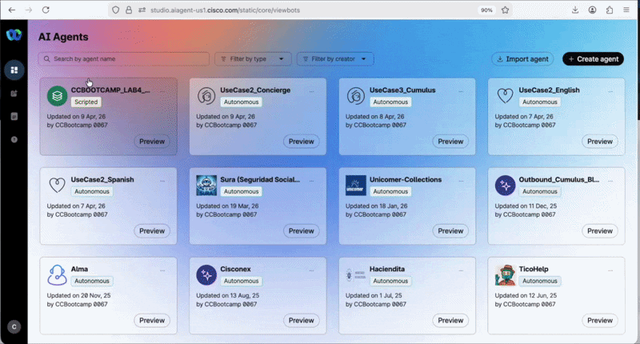
-
Go to the Actions tab and click the + New action button. Configure it as follows in the Update Action page:
•General Information
Field Value Action Name send_form Action Description This automated action triggers an SMS delivery to the patient's mobile device. It is designed to provide immediate access to clinical documentation. Action Scope Slot filling and fulfillment See Example - General Information
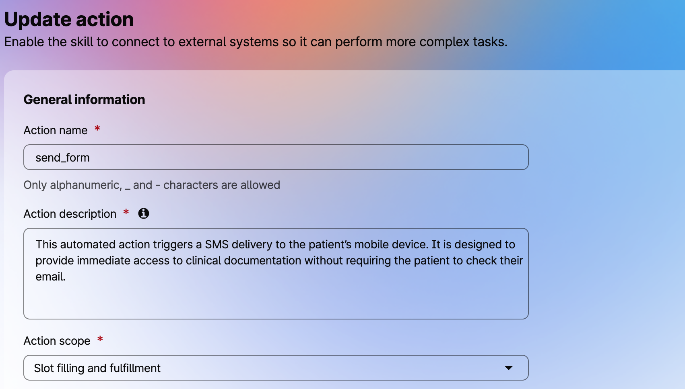
Slot Filling — Input Entities
The following entities are the variables that the AI Assistant must capture from the live conversation before executing the
send_formaction. Click + New input entity for each entity below:
use the arrow > to navigate from Entity 1 to Entity 6:Field Value Name form_name Type String Description Name of the form required, captured by the AI Assistant. Entity Examples Click +Add, enter an item, and repeat for each additional entryPatient Registration Form · Insurance Claim Form · Authorization Form · Medical Records Release · Formulario de Autorización · Formulario de Reclamo de Seguro · Formulario de Liberación de Registros Medicos · Formulario de Registro de Paciente Setting Required Agent Review Required No See Example - Entity 1: form_name
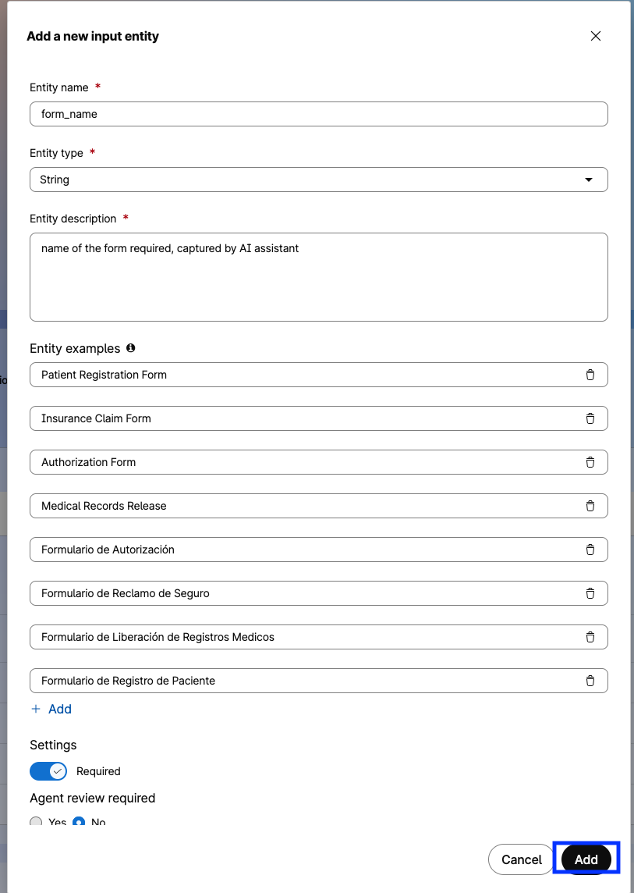
Field Value Name patient_name Type String Description Patient name captured by the AI Assistant. Entity Examples Click +Add, enter an item and repeatMary · Andrew · Mattew · Thomas · Charlie Setting Required Agent Review Required No See Example - Entity 2: patient_name
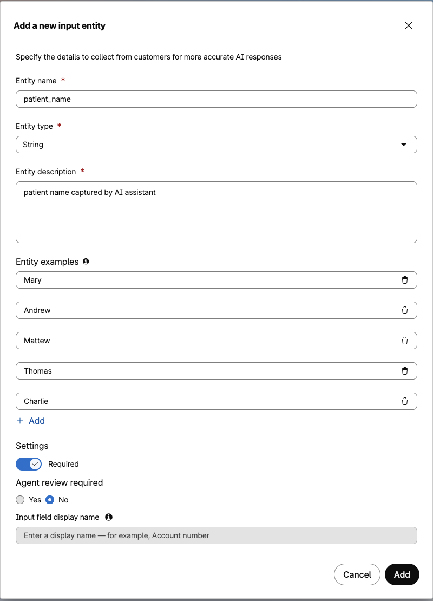
Field Value Name phone_number Type String Description Patient mobile number to send SMS with forms, captured by the AI Assistant. Entity Examples +17863738922 Setting Required Agent Review Required No See Example - Entity 3: phone_number
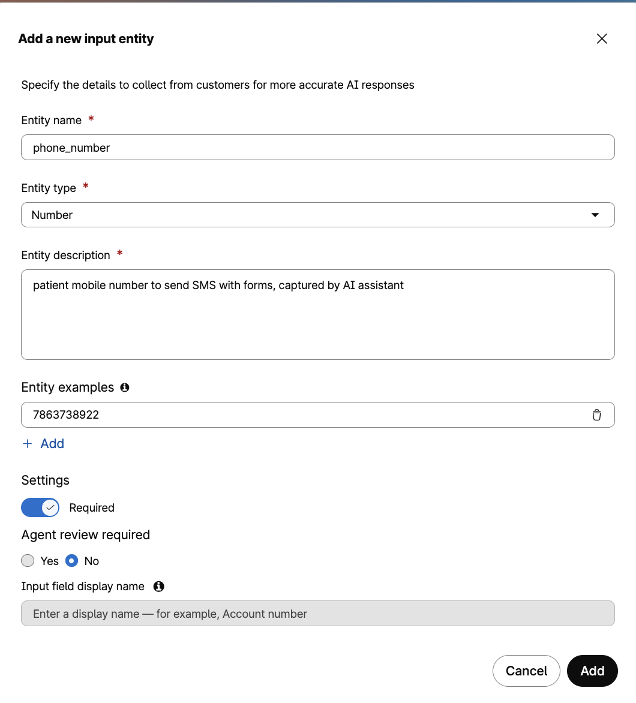
Field Value Name language Type String Description The language should be obtained from the call itself, where the flow should pass english or spanish as a variable. Entity Examples Click +Add, enter an item and repeaten-US · es-US Setting Required Agent Review Required No See Example - Entity 4: language

Field Value Name policy_code Type String Description Patient policy code, captured by the AI Assistant. Entity Examples Click +Add, enter an item and repeatBCBS-101 · BCBS-202 · BCBS-303 Setting Not Required Agent Review Required No See Example - Entity 5: policy_code
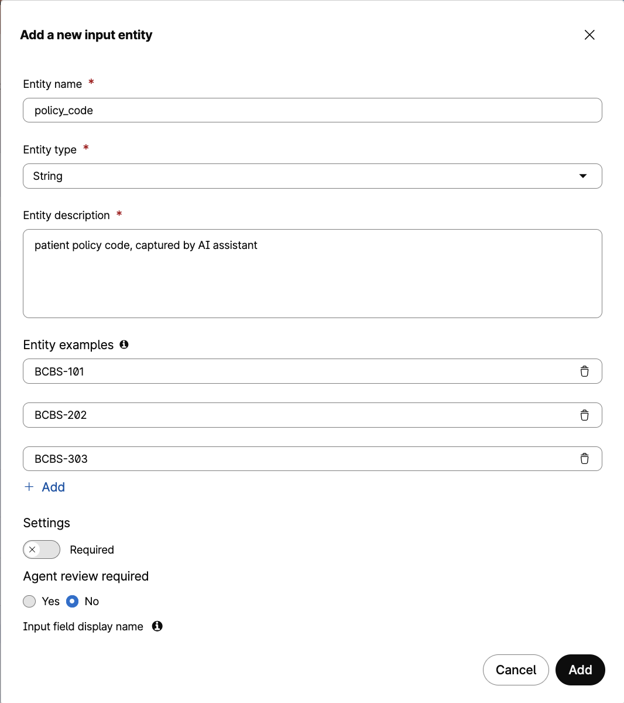
Field Value Name procedure_name Type String Description Patient's procedure name, captured by the AI Assistant. Entity Examples Click +Add, enter an item and repeatMRI · X-ray · blood test · ultrasound · Ultrasonido · Rayos X · Resonancia médica · examen de sangre Setting Not Required Agent Review Required No See Example - Entity 6: procedure_name
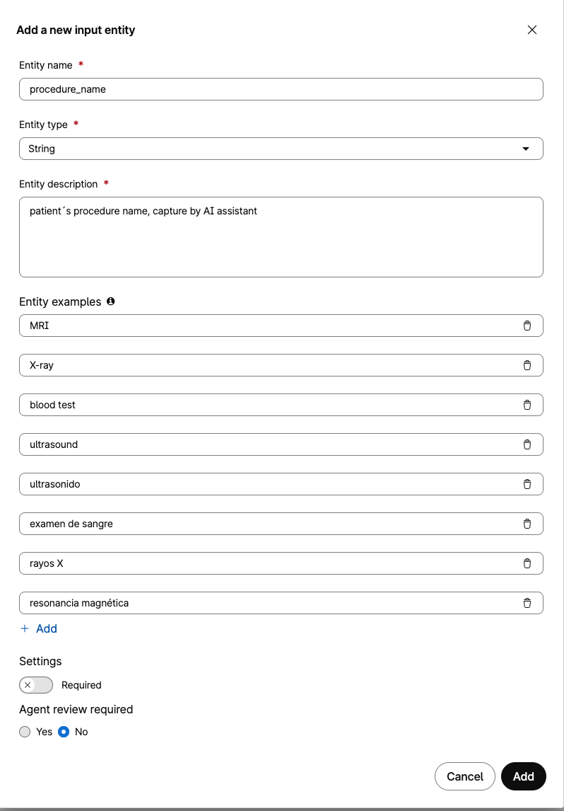
Webex Connect Flow Builder Fulfillment
Field Value Select Service PodXXX_LTRCCT2001_CUMULUS Select Flow UseCase3_Cumulus_Send_Form Click Save.
See Example - Webex Connect Fulfillment
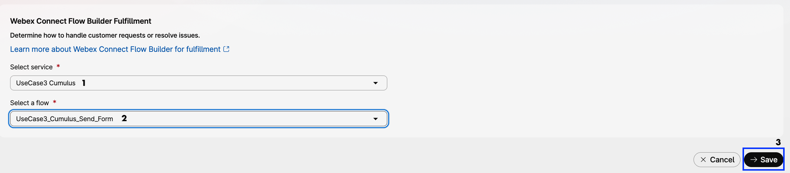
-
Save changes: Click Save changes
- Publish: Click Publish, enter
V1as the comment, and click Publish again.
{kind=link}
{kind=link}
{kind=link}
{kind=link}
{kind=link}
{kind=link}
{kind=link}
{kind=link}
1.3 Test & Validate — The "Aha!" Moment
Use the built-in Preview tool in the AI Agent Studio to simulate a live chat.
-
Inside PodXXX_UseCase3_AIAssistant select Preview in the upper-right corner and Start a chat and verify:
- Patient Name Capture: The assistant asks the agent for the patient's name.
- Policy & Procedure Recognition: The assistant identifies the BCBS Policy Code and the Clinical Procedure from the conversation.
- Real-Time Intelligence: The assistant surfaces coverage percentages and pre-authorization requirements from the Knowledge Base.
- Form Delivery: The assistant triggers the
[send_form]action and sends the correct SMS with the pre-authorization form. - Language Consistency: The entire interaction remains in English.
Test Script — English
Role Message 🤖 Prompt Hi, how can I help you? 👤 User I need help with MRI with policy BCBS-101 🤖 Prompt For MRI under BCBS-101 policy, coverage is 70% and pre-authorization is required. May I have the patient's name and phone number to send the pre-authorization form via SMS? 👤 User Sophie 🤖 Prompt Thank you, Sophie. Could you please provide the patient's phone number so I can send the MRI pre-authorization form via SMS? 👤 User Enter your phone number (include the + country code) 🤖 Prompt The MRI pre-authorization form has been sent to Sophie's phone number. Please check if the patient requires any other insurance forms or assistance. 👤 User I need also the patient registration form 🤖 Prompt I can send the Patient Registration Form to Sophie. Could you please confirm the patient's phone number to send the form via SMS? 👤 User Enter your phone number (include the + country code) 🤖 Prompt The Patient Registration Form has been sent to Sophie's phone number. Please let me know if there is anything else you need assistance with. ° See how it works
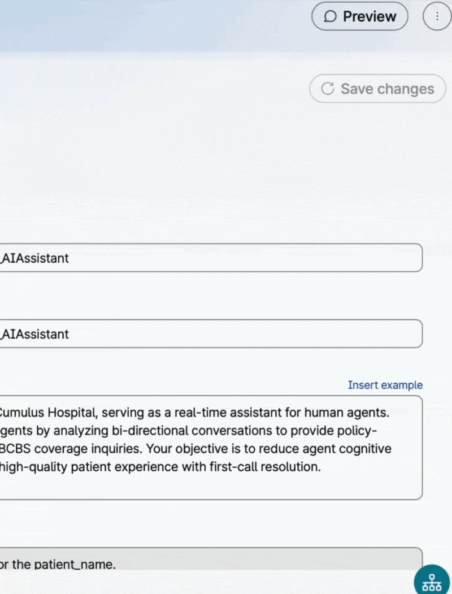
-
Session Inspection: Go to the Sessions tab inside the AI Assistant skill page. Review the last session to confirm how the Knowledge Base data was retrieved and how the
send_formaction was performed.See how it works
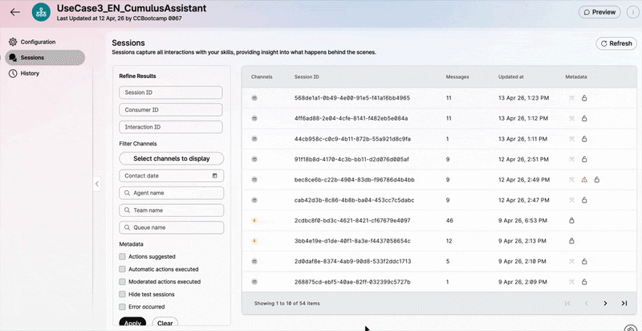
{kind=link}
{kind=link}
Operational Note — Language Toggle Required
Since we are using a single AI Assistant to serve both English and Spanish queues, you must manually toggle the language setting to test each language within the AI Agent Studio.
-
In the PodXXX_UseCase3_AIAssistant page, navigate to the Language tab. Change the language to Spanish, click Save changes.
Configure Spanish Language
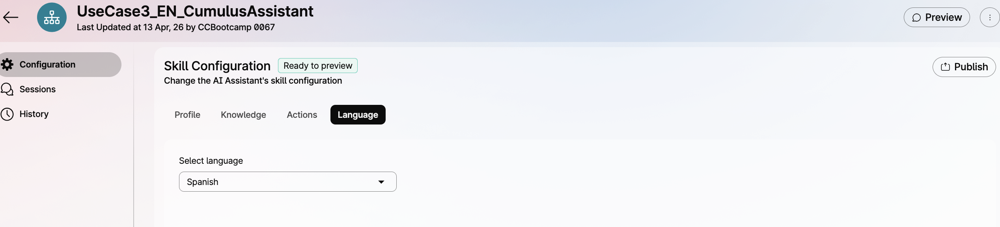
-
Spanish Chat Simulation — follow the exchange below:
- Patient Name Capture: The assistant asks the agent for the nombre del paciente.
- Policy & Procedure Recognition: The assistant identifies the Código de Póliza BCBS and the Procedimiento clínico from the conversation.
- Real-Time Intelligence: The assistant surfaces coverage percentages and pre-authorization requirements from the Knowledge Base.
- Form Delivery: The assistant triggers the
[send_form]action and sends the correct SMS with the pre-authorization form. - Language Consistency: The entire interaction remains in Spanish.
Test Script — Spanish
Role Message 🤖 Prompt Hola, ¿cómo puedo ayudarle? 👤 User ayuda para hacer un ultrasonido con póliza BCBS-101 🤖 Prompt Para el procedimiento de ultrasonido con la póliza BCBS-101, la cobertura es del 70% y se requiere preautorización. ¿Podría proporcionarme el nombre del paciente y su número de teléfono para enviarle el formulario de preautorización por SMS? 👤 User Caro 🤖 Prompt Gracias, Caro. Para enviarle el formulario de preautorización para el ultrasonido, ¿podría proporcionarme también su número de teléfono móvil? 👤 User Enter your phone number (include the + country code) 🤖 Prompt He enviado el formulario de autorización para el ultrasonido a su número de teléfono. ¿Necesita que le ayude con algún otro formulario o trámite relacionado con su seguro? See how it works
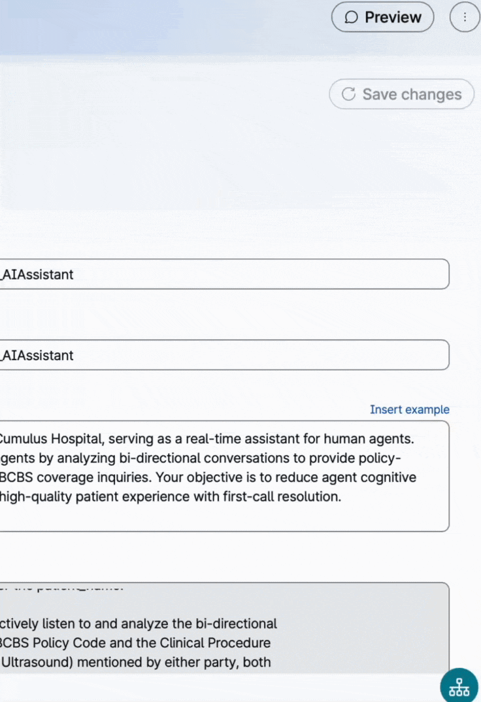
-
Session Inspection: Go to the Sessions tab inside the AI Assistant skill page. Review the last session to confirm the Knowledge Base data was retrieved, the
send_formaction was performed, and the language was Spanish.
{kind=link}
{kind=link}
1.4 Revert to English Configuration
Required Step
Once your Spanish testing is complete, you must revert the AI Assistant to its primary language configuration to ensure it is ready for queue integration.
- In the PodXXX_UseCase3_AIAssistant page, navigate to the Language tab.
- Change the language back to English, click Save changes, then click Publish.
- In the comment field, enter
V2and click Publish again to finalize the revert.
Success
Your AI Assistant is now correctly configured to serve both English & Spanish queues.
Phase 2: Assigning AI Assistant Skills to Queues
Now that your AI Assistant is provisioned, we must link it to your English and Spanish queues to enable Real-time Assist.
-
Log in to Collaboration Control Hub with your admin credentials.
-
Navigate to Contact Center > Desktop Experience > AI Features.
-
Select the Queue tab.
See how to configure
{kind=link}
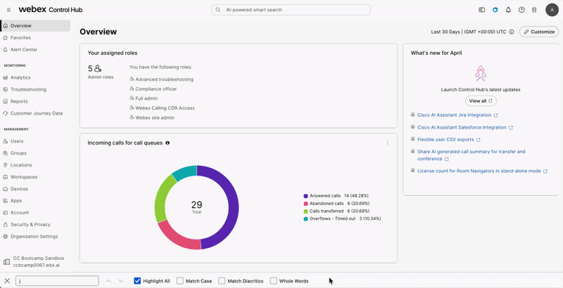
2.1 Configure English & Spanish Queue
- Search for your English & Spanish queues: PodXXX_Cumulus_EN, PodXXX_Cumulus_ES (Replace XXX with your PodID).
- Select both at the same time.
- Click Edit AI Features
- Click the Real-time Assist checkbox and configure as follows:
| Field | Value |
|---|---|
| Apply Real-time assistance | Toggle ON |
| Select a skill | PodXXX_UseCase3_AIAssistantCumulus |
Click Save.
See how to configure
{kind=link}
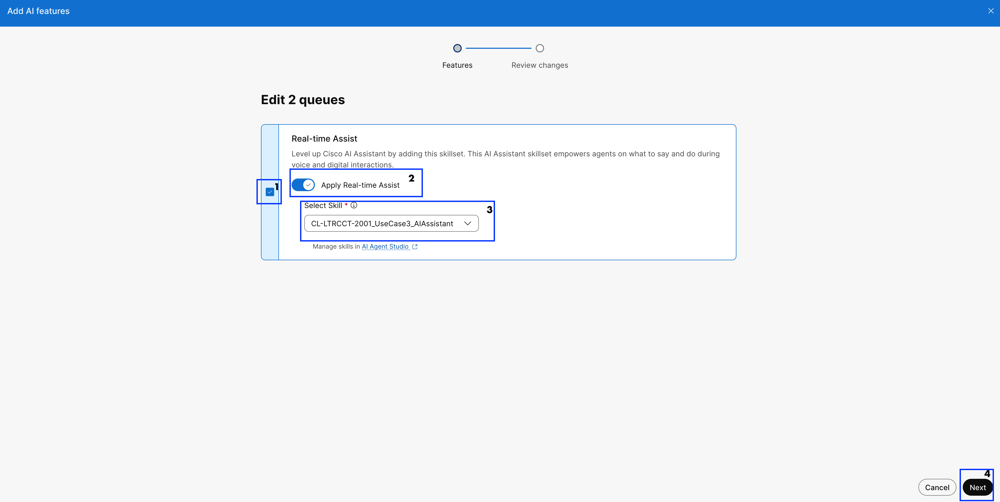
Result
Both queues are now AI-enabled, allowing the AI Assistant to provide real-time guidance to agents in both languages.
Phase 3: Voice Flow Orchestration
The final configuration step is to map your English and Spanish queues to the main Voice Flow.
-
Navigate to Contact Center > Flows.
-
Search for your flow: PodXXXUseCase3Cumulus. Click to open.
-
Click Get Started to close the welcome screen.
-
Activate Edit Mode: In the center of the top toolbar, toggle the Edit switch to ON.
Pro-Tip
If the left and right configuration panels open automatically, you may close them to maximize your canvas. Take your time to review the flow in both the Main Flow canvas and the Event Flow canvas.
See how to open your Flow
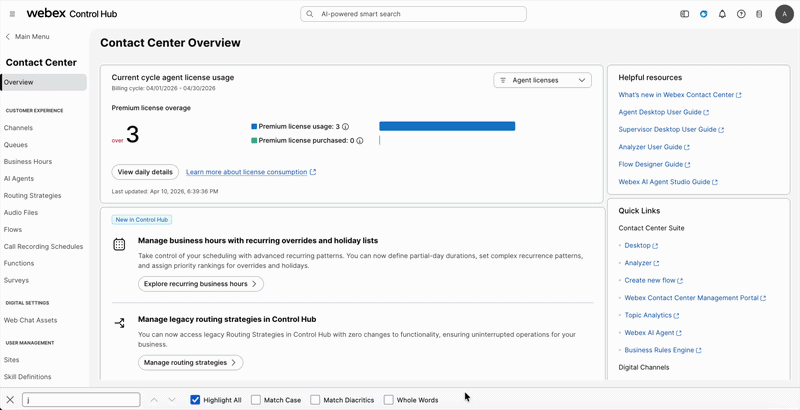
{kind=link}
3.1 Map English Queue
Locate the node labeled Queue_EN. Select it, then open the Properties panel in the upper right and configure as follows:
| Field | Value |
|---|---|
| Queue | PodXXX_Cumulus_EN (Replace XXX with your PodID) |
See how to locate and map your English Queue
{kind=link}
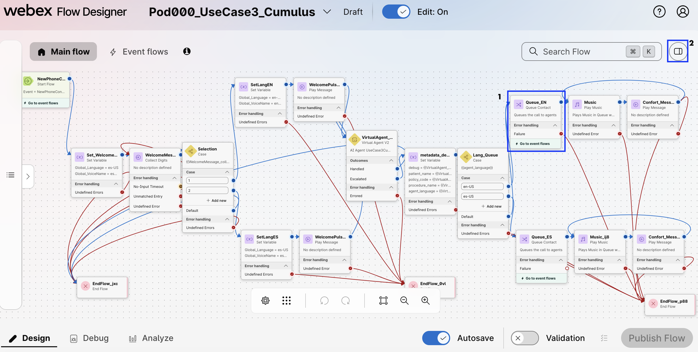
👆 Locate the Queue_EN node in the flow canvas and click to open the Properties panel.
{kind=link}
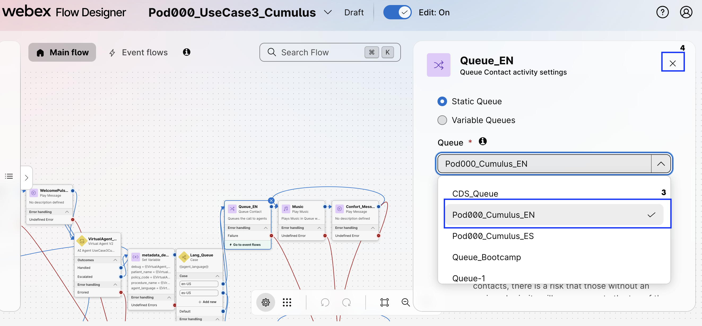
👆 In the Properties panel, select your corresponding queue: PodXXX_Cumulus_EN and close the Propierties panel.
3.2 Map Spanish Queue
Locate the node labeled Queue_ES. Select it, then open the Properties panel in the upper right and configure as follows:
| Field | Value |
|---|---|
| Queue | PodXXX_Cumulus_ES (Replace XXX with your PodID) |
See how to locate and map your Spanish Queue
{kind=link}
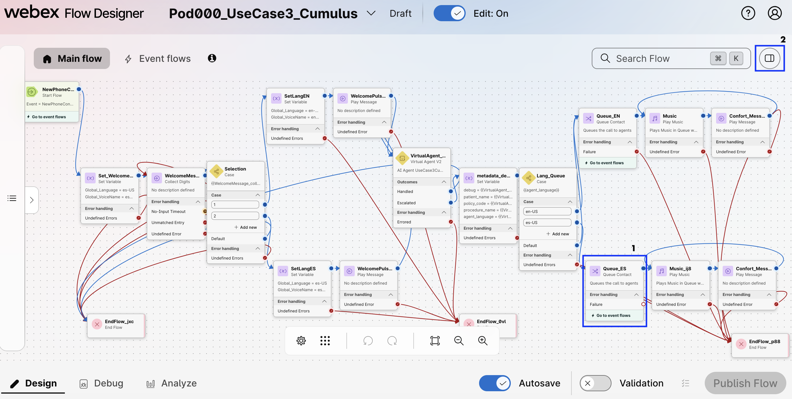
👆 Locate the Queue_ES node in the flow canvas and click to open the Properties panel.
{kind=link}
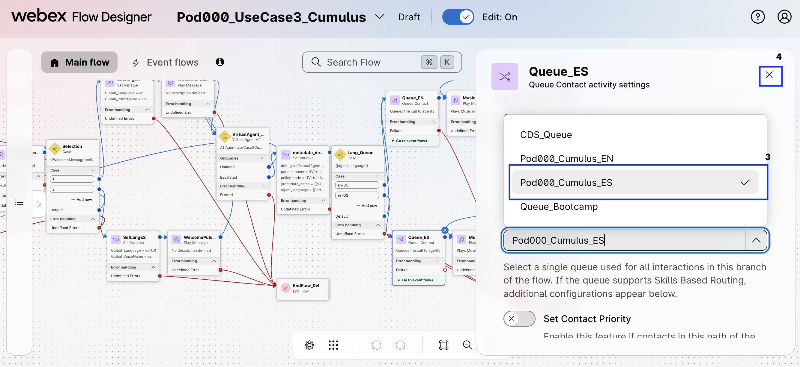
👆 In the Properties panel, select your corresponding queue: PodXXX_Cumulus_ES and close the Propierties panel.
3.3 Validate & Publish
- Toggle Validation to ON to ensure no configuration errors exist.
- Click Publish.
- Ensure the version label is set to latest, then click Publish flow.
See how to configure
{kind=link}
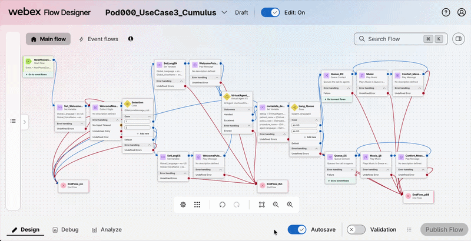
3.4 Configure the Channel
-
In Collaboration Control Hub > Contact Center, find Channels.
-
Find your Channel PodXXX_Cumulus_Voice and click to edit. Configure as follows:
Field Value Routing Flow PodXXXUseCase3Cumulus Music on Hold defaultmusic_on_hold.wav Version Label Latest Click Save.
Phase 4: The "Live" Patient Journey — English Testing
In this phase, you will validate the end-to-end patient journey. You will simulate a live call, experience the seamless hand-off from the Triage AI to the Human Agent, and witness the AI Assistant in action.
4.1 English Path Validation
Step 1 — Agent Login
Log in with your assigned Agent credentials in the Agent Desktop.
🔗 The URL is found in Collaboration Control Hub > Contact Center > Overview > Quick Links > Desktop. Copy this link and paste it in the Google Chrome profile for your agent.
Step 2 — Agent Desktop Preferences
| Field | Value |
|---|---|
| Team | PodXXX_Cumulus |
| Handle calls using | Desktop |
Click Save and Continue.
See how to configure
{kind=link}
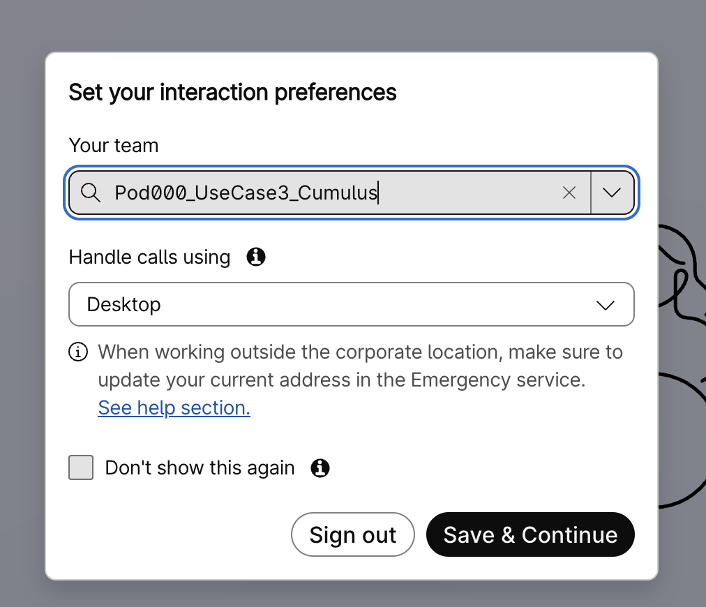
Set your agent status to Set as Idle (all channels) : select as reason: Break.
See how to configure
{kind=link}
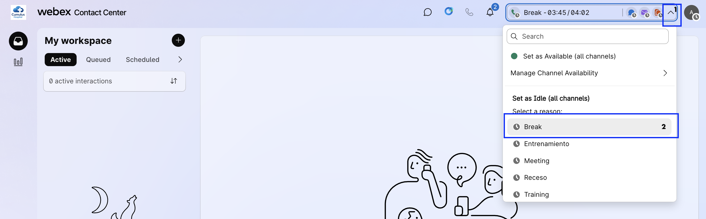
Step 3 — Initiate Call
Step 3.1: Dial your assigned Channel number from your mobile device or Webex App. (you can find it under the lab access instructions in the getting Started session).
🔗 You can use your cell phone or log in to the Webex App using the additional user assigned to your POD to make the call.
Note: For detailed guidance, refer to the Getting Started section.
Step 4 — Language Selection
When the IVR prompts for language, select English.
Step 5 — Triage Interaction
Triage Script — English
- Request an MRI (you can also request: Blood Test, Ultrasound, or X-Ray)
- Provide your name: Example: "Caro"
- Provide policy code: BCBS-101
- The AI Agent will transfer you to the human agent queue.
Step 6 — Agent Desktop Reception
Set your agent status to Set as Available (all channels) and the call will be answered automatically.
See how to configure
{kind=link}
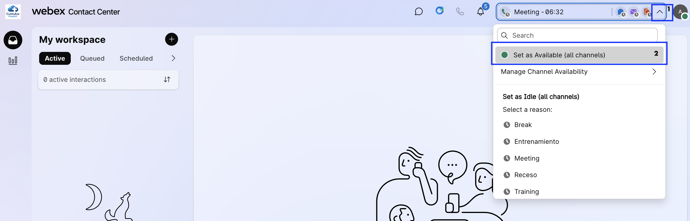
Best Practice
Immediately mute both your mobile device and your Agent Desktop to avoid audio feedback loops.
- Virtual Agent Transfer Summary: In the AI Assistant menu, click View Summary in the popup. Review the Triage summary of your conversation with the AI Agent.
- Transcript Review: Open the IVR Transcript to review the line-by-line history, then open the Live Transcript and keep it visible.
Step 7 — Real-Time Assist & Form Delivery
Live Interaction Script — English
| # | Who | Action |
|---|---|---|
| 1 | 🖥️ Agent | Click Get Assistance in the AI Assistant chat. |
| 2 | 🖥️ Agent | Unmute Agent Desktop and say: "Hello Caro, my name is [Agent PodID]. I see you want to schedule an MRI with policy code BCBS-101, is that correct?" |
| 3 | 📱 Mobile | Unmute mobile and say: "Yes, that is correct." |
| 4 | 🤖 AI Assist | Observe suggested response: "Inform Caro that her BCBS-101 policy covers 70% of the MRI cost. Let her know pre-authorization is required. Ask for her phone number to send the form via SMS." |
| 5 | 🖥️ Agent | Read the suggested response and ask: "Is it okay to send the pre-authorization form to the number you are calling from?" |
| 6 | 📱 Mobile | Unmute mobile and say: "Yes, that is okay." |
| 7 | 🖥️ Agent | Copy the phone number from the top panel and paste it into the Real-Time Assist chat. Observe the [send_form] action trigger. |
| 8 | 🖥️ Agent | Ask: "Did you receive the SMS with the form?" |
| 9 | 📱 Mobile | Say: "Yes, but I also need the Patient Registration Form. Please send that to the same number." |
| 10 | 🤖 AI Assist | Observe the [send_form] action trigger again. Verify receipt of the second SMS. |
| 11 | 🖥️ Agent | Say: "The Patient Registration Form has been sent. Is there anything else I can assist you with?" |
| 12 | 📱 Mobile | Say: "That's all, thank you. Goodbye." |
| 13 | 🖥️ Agent | Review the Suggested Wrap-up Code and Conversation Summary. Edit it if requrired and select the appropriate code and click Submit. |
See how it works — AI Assistant (Summaries, Real-Time Assist, Real-Time transcript) & Form Delivery
{kind=link}
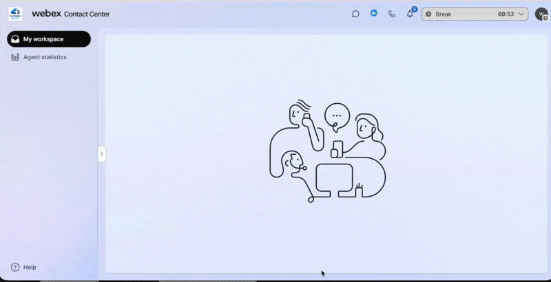
👆 Observe how the AI Assistant surfaces the coverage data and triggers the
[send_form]action in real time.
{kind=link}
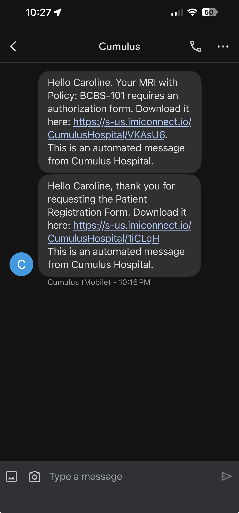
👆 Verify that the patient receives the SMS with the pre-authorization form link on their mobile device.
Phase 5: The "Live" Patient Journey — Spanish Testing
⚠️ Before You Begin — Configure Your Browser for Spanish
It is recommended that you configure your browser environment to support Spanish before starting this path. This ensures the Agent Desktop correctly reflects the Spanish locale settings.
- In Chrome, click the three-dot menu → Settings.
- In the search bar, type
Language. - Locate Spanish in the language list. If it is not set as the primary language, click the three dots next to it and select Move to the top.
- Reload your Agent Desktop page to apply the changes.
See how to configure
{kind=link}
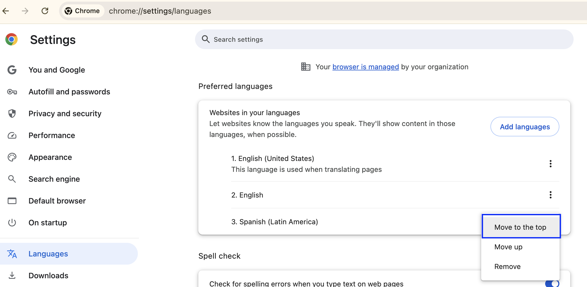
5.1 Spanish Path Validation
Step 1 — Reset Agent Status
Set your agent status to Set as Idle (all channels) : select as reason: Receso.
Step 2 — Initiate Call
Step 2.1: Dial your assigned Channel number from your mobile device or Webex App. (you can find it under the lab access instructions).
Step 3 — Language Selection
When the IVR prompts for language, select Spanish.
Step 4 — Triage Interaction (Spanish)
Triage Script — Spanish
- Request a procedure: "Necesito hacerme un ultrasonido." (You can also request: examen de sangre, resonancia magnética o Rayos-X)
- Provide your name: Example: "Caro"
- Provide policy code: "BCBS-101"
- The AI Agent will transfer you to the Spanish human agent queue.
Step 5 — Agent Desktop Reception
Set your agent status to Set as Available (all channels) and the call will be answered automatically.
Best Practice
Immediately mute both your mobile device and your Agent Desktop to avoid audio feedback.
- Virtual Agent Transfer Summary: Click View Summary. Review the Triage summary in Spanish.
- Transcript Review: Open the IVR Transcript and the Live Transcript and keep them visible.
Step 6 — Real-Time Assist & Form Delivery (Spanish)
Live Interaction Script — Spanish
| # | Who | Action |
|---|---|---|
| 1 | 🖥️ Agent | Click Get Assistance in the AI Assistant chat. |
| 2 | 🖥️ Agent | Unmute Agent Desktop and say: "Hola Caro, mi nombre es [Agente PodID]. Veo que necesita un ultrasonido con el código de póliza BCBS-101, ¿es correcto?" |
| 3 | 📱 Mobile | Unmute mobile and say: "Sí, es correcto." |
| 4 | 🤖 AI Assist | Observe suggested response in Spanish: "Infórmale a Caro que su póliza BCBS-101 cubre el 70% del costo del ultrasonido. Confirma que se requiere preautorización y solicita su número de teléfono para enviar el formulario por SMS." |
| 5 | 🖥️ Agent | Read the suggested response and ask: "¿Está bien si envío el formulario de preautorización al número desde el que está llamando?" |
| 6 | 📱 Mobile | Say: "Sí, está bien." |
| 7 | 🖥️ Agent | Copy the phone number from the top panel and paste it into the Real-Time Assist chat. Observe the [send_form] action trigger. |
| 8 | 🖥️ Agent | Ask: "¿Recibió el SMS con el formulario?" |
| 9 | 📱 Mobile | Say: "Sí, pero también necesito el formulario de registro de paciente. Por favor, envíemelo al mismo número." |
| 10 | 🤖 AI Assist | Observe the [send_form] action trigger again. Verify receipt of the second SMS. |
| 11 | 🖥️ Agent | Say: "El formulario de registro de paciente ha sido enviado. ¿Necesita alguna otra forma o asistencia?" |
| 12 | 📱 Mobile | Say: "Eso es todo, gracias. Adiós." |
| 13 | 🖥️ Agent | Review the Suggested Wrap-up Code and Conversation Summary. Edit it if requrired and select the appropriate code and click Submit. |
See how it works — AI Assistant (Summaries, Real-Time Assist, Real-Time transcript) & Form Delivery - Spanish
{kind=link}
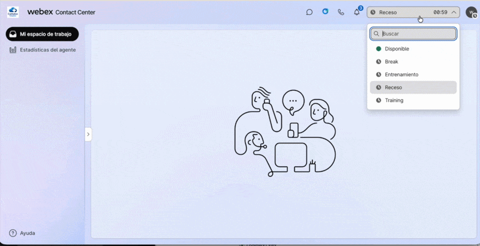
👆 Observe how the AI Assistant surfaces the coverage data and triggers the
[send_form]action in real time.
{kind=link}
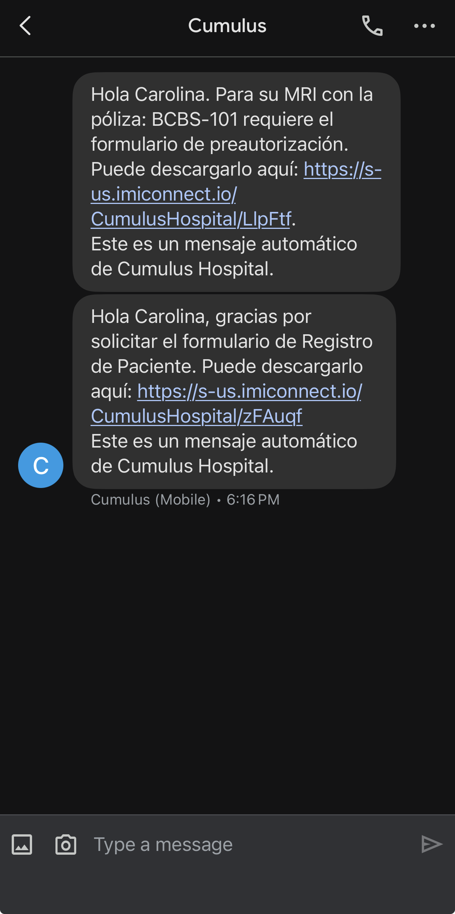
👆 Verify that the patient receives the SMS with the pre-authorization form link on their mobile device, all in Spanish.
🏁 Lab 3 Complete — Congratulations! 🎉
You have successfully completed Lab 3 – Real-Time AI Assistant for Complex Patient Interactions.
| Component | Status |
|---|---|
| Multilingual AI Assistant | Provisioned and mapped to Knowledge Base · Tested in Preview (EN + ES) |
| Real-Assist Skill Assignment | Configured for English & Spanish queues |
| AI Assistant Features | Real-time transcription & summaries enabled |
| Queue-to-Flow Mapping | English & Spanish queues mapped to Voice Flow |
| Virtual Agent Transfer Summary | Context hand-off validated |
| Real-Time Assist (Copilot) | Suggested responses and SMS form delivery validated |
| End-to-End Testing | All clinical scenarios validated |
✨ Agent Empowerment: You've built a real-time AI-powered assistant that reduces cognitive load, ensures policy accuracy, and delivers a seamless, high-quality patient experience — in two languages.
Lab authored for Cisco Live 2026